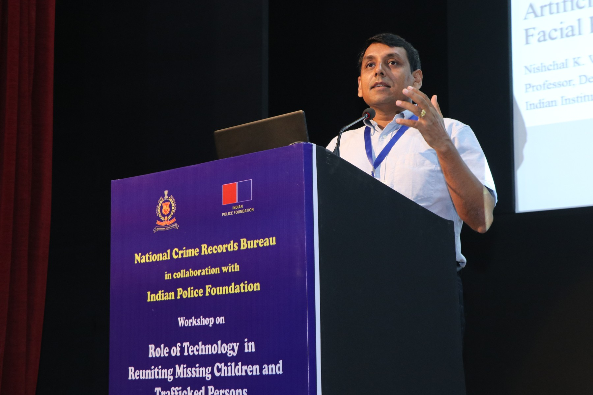
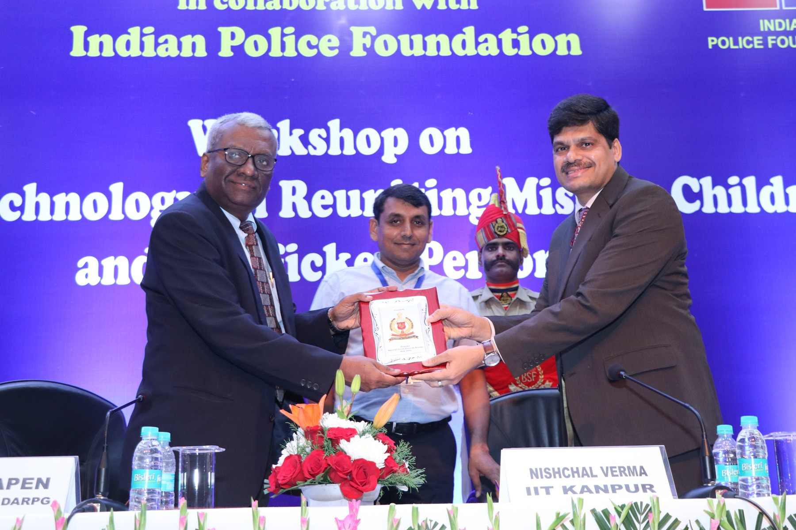
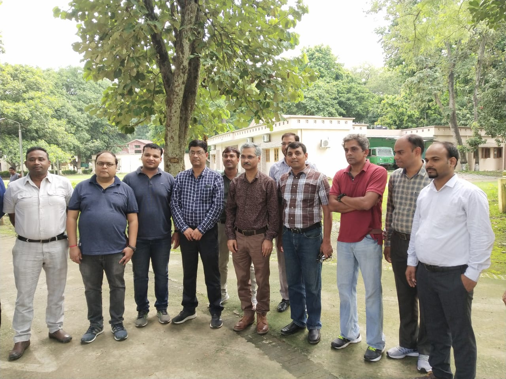
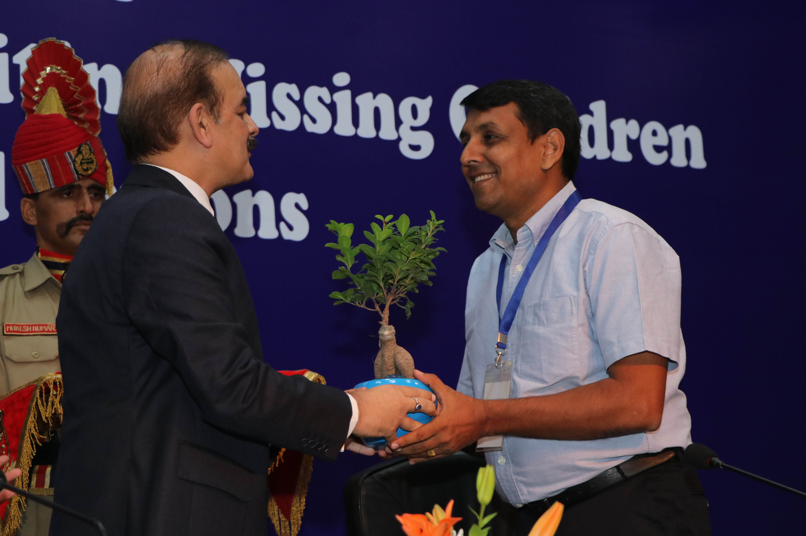
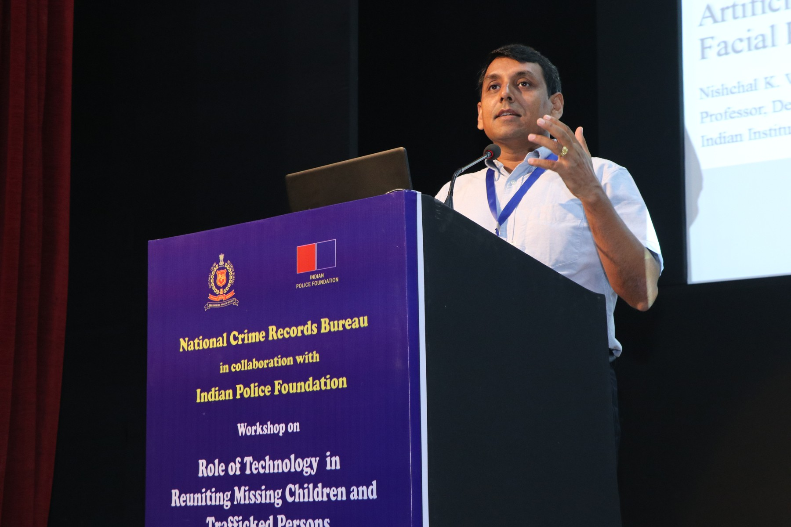
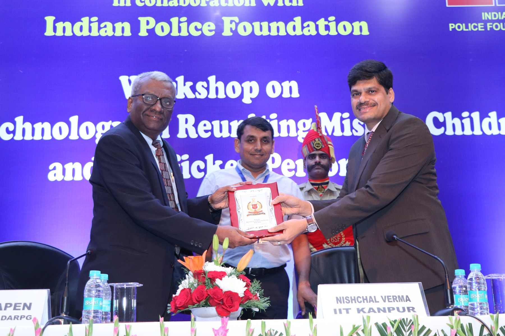
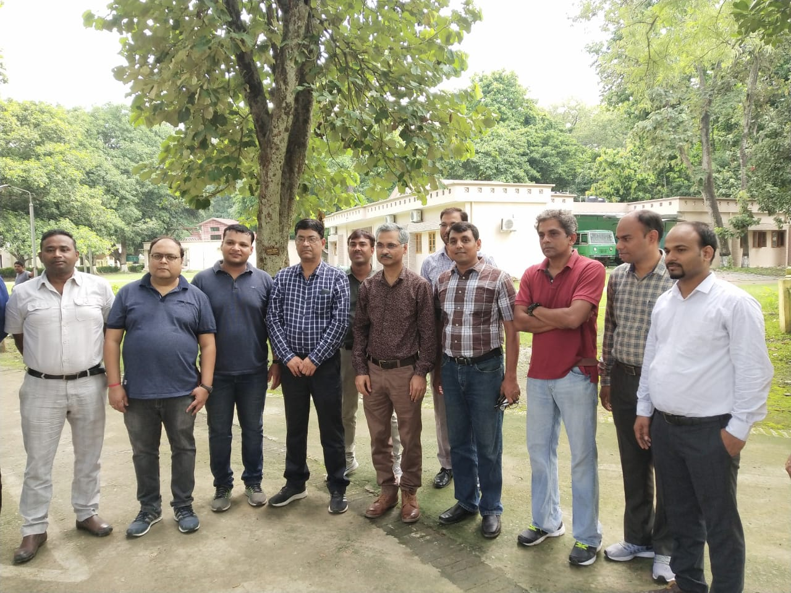
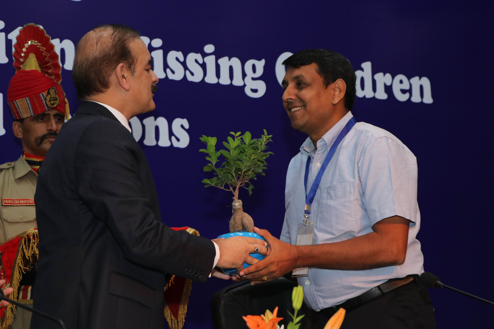

BIOGRAPHY
Dr. Verma's research expertise falls under Artificial Intelligence (AI) related theories and its practical applications to many inter-disciplinary domains but not limited to machine learning, deep learning, computer vision, prognosis and health management, bioinformatics, cyber physical systems, complex and highly non-linear systems modelling, clustering, and classifications, etc. He has published more than 230 research papers and 4 Books (edited/ co-authored) in the field of AI. He has successfully completed 23 projects from various funding agencies such as The BOEING Company, USA, DST, DRDO, JCBCAT, MHRD, SERB, CSIR, IIT Kanpur, MCIT, SFTIG, VTOL, etc. He has 15+ years of experience in the field of AI. He has been serving as Associate Editor/ Editorial Board Member of various reputed journals and conferences which include IEEE Transactions on Artificial Intelligence, IEEE Transactions on Neural Networks and Learning Systems, IEEE Computational Intelligence Magazine, Editor, IEEE Access, and many more. He has also developed several AI related key technologies for The BOEING Company, USA and organized AI related workshops, conferences, seminars, short term courses, etc.